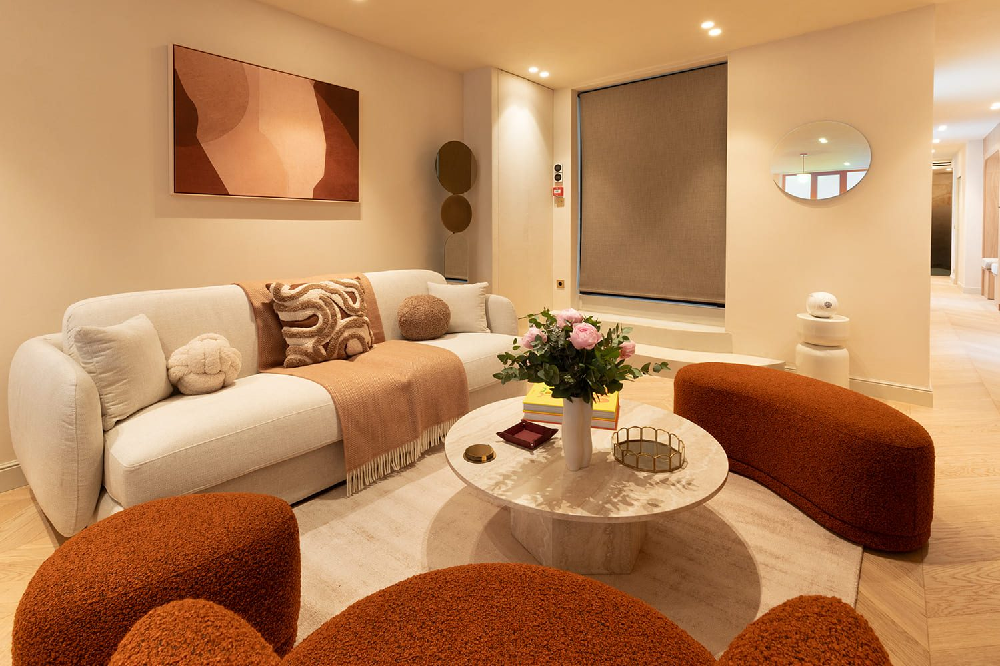
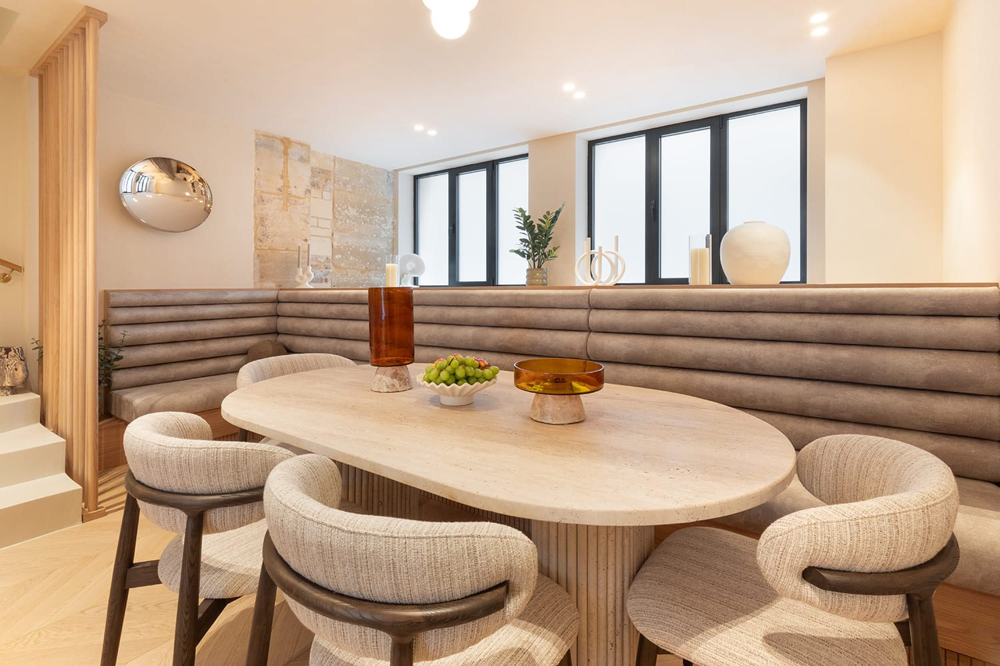
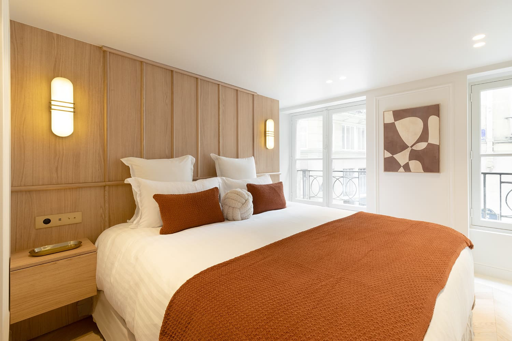
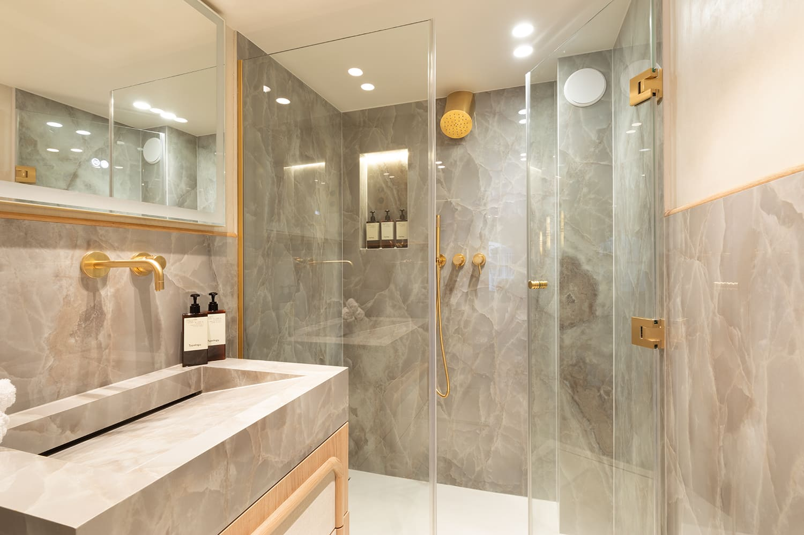
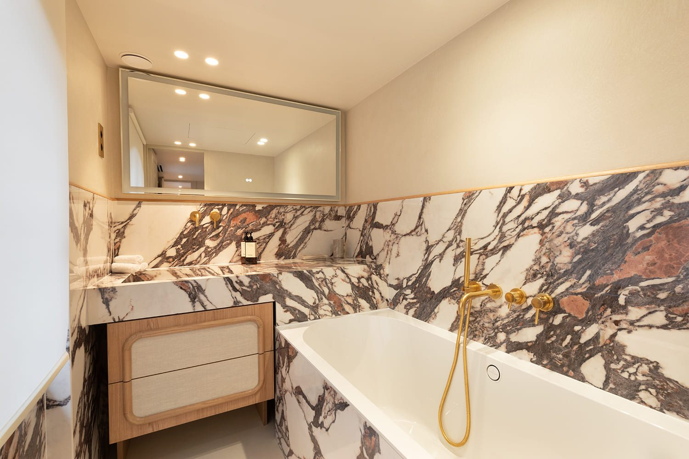
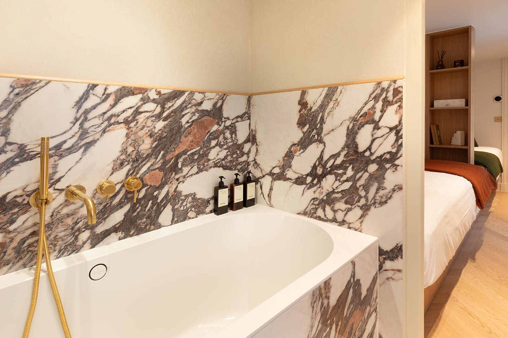

Paris 1er
Trois niveaux, une seule intention. Le marbre choisi veine par veine, la lumière dosée, l'eau à la bonne température — le luxe comme discipline.






Dans le 1er arrondissement de Paris, ce triplex de 320 m² incarne l'idée du luxe sans ostentation — celui qui s'éprouve avant de se voir. John Rozenblum, designer d'intérieur, a orchestré une rénovation de prestige sur trois niveaux : séjour double-hauteur, espace spa intégré, matériaux choisis veine par veine. Le marbre, le noyer, l'acier brossé dialoguent dans une palette resserrée, cohérente du sol au plafond. Le spa privé n'est pas un ajout — il est le cœur du projet, pensé comme un sanctuaire domestique. Une rénovation complète à Paris où chaque décision technique au service du silence et du confort.
Dans le 1er arrondissement, un triplex de cette surface pose un problème que les grands appartements de plain-pied ne connaissent pas : la continuité. Trois niveaux, c'est trois occasions de changer de sujet. Le projet a donc fixé une règle avant toute chose — une seule intention traverse les trois étages, et chaque niveau la décline sans jamais la contredire.
Deux marbres structurent le projet : un gris veiné pour les douches, un blanc veiné de mauve pour les baignoires. Dans les deux cas, les blocs ont été choisis puis appareillés de façon que les veines se poursuivent d'un panneau à l'autre, y compris dans les angles. C'est un travail long, invisible pour qui ne le cherche pas, et c'est précisément ce qui distingue une pièce d'eau assemblée d'une pièce d'eau dessinée.
Rien dans ce triplex n'est démonstratif. Le salon reçoit un canapé crème et des fauteuils bouclés terracotta autour d'une table en pierre claire ; le coin repas une banquette capitonnée et une table ovale ; les chambres des panneaux de chêne et un jeté terracotta. La retenue est un choix de méthode : dans un volume de cette taille, l'accumulation se voit immédiatement, et la seule manière de tenir trois niveaux est de répéter peu d'éléments, bien dessinés.
L'espace spa est le seul du projet où le confort technique prime sur le dessin : température de l'eau, hygrométrie, ventilation, éclairage variable. Ces réglages ne se photographient pas. Ils déterminent pourtant si la pièce sera utilisée toutes les semaines ou deux fois par an — et c'est à cela, plus qu'à la matière, qu'on mesure un projet de ce niveau.
Le Triplex avec Spa rejoint les projets sur plusieurs niveaux conduits par John Rozenblum, aux côtés du Duplex Madeleine et de Pigalle.
Ce projet fait partie des réalisations de design d'intérieur à Paris de John Rozenblum. Pour discuter d'un projet similaire ou d'une rénovation sur mesure, prenez contact.
Un projet ?
Chaque projet commence par une conversation. Partagez votre vision — je m'occupe du reste.
Prendre contact